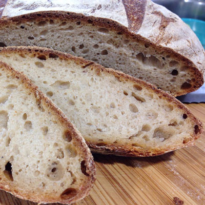
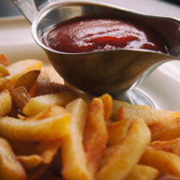

Not is our food good, it's also good-looking! Our patrons often stop to admire our fare with a quick Instagram before digging in. We've collected a few of our favorite shots here.
Our Baked Goods
 We start our day at the crack of dawn to bake our own muffins, bread, and dinner rolls. Loaves not used that day are donated to the local food shelter.
Our Burgers
People come from all over to enjoy our lovingly made burgers. We grind our own locally-sourced organic beef and turkey so you know it's fresh and free from fillers and other nonsense.
Go for one of our creative topping combos or stick with the classics.
Catch of the Day
Our chef works with local fisherman to pick the freshest the sea has to offer for our daily seafood special. Our Roast Cod Caponata with Roasted Potatoes is an old favorite with our regulars.
Land Bird
Farm raised and farm fresh chicken. Our chickens are the best chickens of all the chickens, guranteed by us. Come see us and have the best chicken you've ever had.
The Better Mans Potatoes

Made of potatoes straight from the dirt. Golden brown and elimanates frowns, order our fries they're great all around.
Tabouleh more like Tabou-yay!
Our tabouleh is pretty great. Trust us because we know how to make tabouleh. Consisting of the ingredients that tabouleh is generally made of, our tabouleh really tastes like tabouleh.
Order today and enjoy a classic tabouleh and all of its flavors.